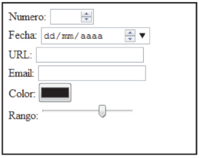

Etiquetas basicas de htlm y atributos
A continuacion se explican las etiqueas mas utilizadas en HTML5
Eqiquetas Semánticas
<header> ... </header>: Para definir la cabecera de la página.
<footer>... </footer>: Para definir el pie de página. Normalmente contiene datos sobre quien ha creado la página, datos del copyright, etc.
<nav>...</nav>: Permite definir un elemento de navegación de la página web, como el menú principal o menús secundarios.
<section>...</section>: Se utilizan para encerrar el código correspondiente a una sección genérica dentro de un documento.
<aside>...</aside>: Sirve para delimitar todo aquel contenido que no es directamente contenido principal de esa página en concreto. Puede usarse
por tanto para todos aquellos elementos secundarios como bloques publicitarios, enlaces externos, citas, un calendario, etc.
<article>...</article>: Se utiliza para definir artículos como noticias, entradas de un blog, etc. Es probablemente uno de los más importantes de HTML5,
ya que permite indicar cuál es el contenido de una página web.
Celaya Luna, A. (2014). Creación de páginas web: HTML 5. Málaga, Spain: Editorial ICB. Recuperado de https://elibro-net.bibliotecavirtual.unad.edu.co/es/ereader/unad/56045?page=29.
Eqiquetas Multimedia
<video>...</video>: Sirven para integrar vídeo en las páginas web de la misma forma que se hace con los archivos de imagen utilizando
la etiqueta .
<audio>...</audio>: Inserta un archivo de audio mp3 en la página de forma idéntica a como se hace con el vídeo.
En el caso del audio y el vídeo pueden añadirse también los atributos:
controls: Si se incluye dentro de las etiquetas audio o video se activa un conjunto de controles de reproducción integrados.
Normalmente incluye reproducción, pausa, buscar y ajustar volumen.
height: Establece el alto del reproductor en píxeles.
width: Establece el ancho del reproductor en píxeles.
preload: Define cuánto almacenamiento en búfer es necesario para comenzar la reproducción.
autoplay: Inicia la reproducción automáticamente cuando el reproductor tiene suficiente contenido
almacenado en el búfer.
poster: Indica una imagen que se mostrará cuando el reproductor no está disponible o bien mientras
se está cargando el contenido.
loop: Reproduce el contenido repetidamente hasta que se presiona
el botón de pausa en los controles.
Para graficos El elemento <canvas> funciona a modo de superficie de dibujo dentro de una página web.
Dentro de esta superficie de dibujo se pueden crear formas con colores, patrones de relleno, etc.
Se pueden manipular los píxels de forma interactiva en pantalla, mostrar textos y exportar los contenidos
a archivos de imagen como PNG. Mediante JavaScript o las nuevas funciones de animación de CSS3 los objetos
creados podrán moverse, desaparecer, cambiar de tamaño, etc.
Celaya Luna, A. (2014). Creación de páginas web: HTML 5. Málaga, Spain: Editorial ICB. Recuperado de https://elibro-net.bibliotecavirtual.unad.edu.co/es/ereader/unad/56045?page=30-31.
Eqiquetas Formularios
Controles de entradas:
<input type="email"/>: Para introducir una dirección de correo electrónico. El sistema validará que la sintaxis es correcta.
<input type="url"/>: Para introducir una dirección web o url. Muestra un mensaje de error por ejemplo si se introducen caracteres no válidos.
<input type="date"/>: Permite introducir una fecha, incorpora un calendario desplegable para elegirla.
<input type="number"/>: Para introducir un número, se puede indicar un rango máximo y mínimo.
<input type="range"/>: Presenta una barra con un rango para arrastrar con el ratón.
<input type="search"/>: Para introducir un término de búsqueda en la web.
<input type="color"/>: Para elegir un color. Despliega una carta de colores.

Celaya Luna, A. (2014). Creación de páginas web: HTML 5. Málaga, Spain: Editorial ICB. Recuperado de https://elibro-net.bibliotecavirtual.unad.edu.co/es/ereader/unad/56045?page=31.
Otras Eqiquetas
<figure>...</figure>: Delimita una zona para incluir una imagen.
<figcaption>...</figcaption>: Enmarca el título de una imagen dentro de la etiqueta figure.
<hgroup>...</hgroup>: Sirve para agrupar títulos con subtítulos. Por ejemplo, poner un título con h1 seguido de un
subtítulo con h2.
<mark>...</mark>: Produce un efecto de resaltado de color sobre el texto que rodea.
<time>...</time>: representa una hora o una fecha del calendario Gregoriano.
Celaya Luna, A. (2014). Creación de páginas web: HTML 5. Málaga, Spain: Editorial ICB. Recuperado de https://elibro-net.bibliotecavirtual.unad.edu.co/es/ereader/unad/56045?page=33.